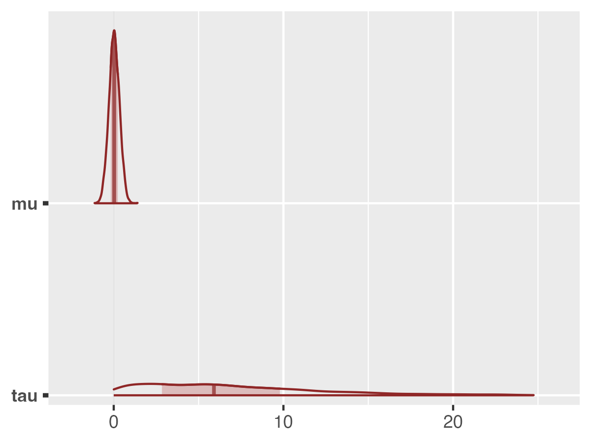
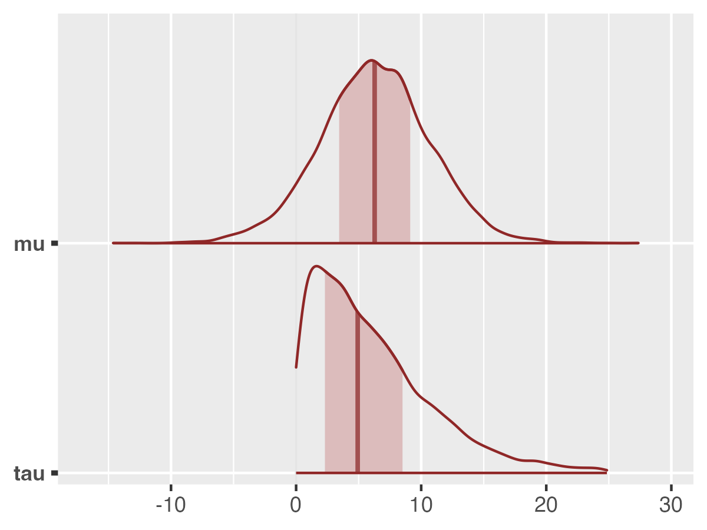

Translating Probabilistic Models: From JAGS, Nimble, and Stan to rjuliabugs
other_ppl.RmdOverview
Many R users already work with either probabilistic programming
languages or open statistical software, such as JAGS
(Plummer, 2003), Nimble (de Valpine et al., 2017,
2024a, 2024b) or Stan (Carpenter et al., 2017, Stan;
Stan Development Team., 2024) to fit Bayesian models.
Although each of these tools uses different syntax and inference
algorithms, the statistical model is usually similar —
what changes is how the model is expressed and the computational backend
that fits it – including the sampler and the MCMC methodology used to
obtain the posterior.
rjuliabugs extends this ecosystem by
providing an interface from R to JuliaBUGS, a Julia
implementation of BUGS that also enables the use of advanced samplers
such as Hamiltonian Monte Carlo (HMC) while maintaining the familiar
BUGS syntax. Because JuliaBUGS uses BUGS syntax, any model specified for
JAGS or Nimble can typically be run in
rjuliabugs with little or no modification. Models
originally written in other languages, such as Stan, can also be
translated into BUGS form and executed in
rjuliabugs.
In this vignette section, we:
-
Start with the same model — the classic Eight
Schools hierarchical model (Rubin, 1981).
- Show it in its original forms for Stan, JAGS, and Nimble, as they
would be run from R.
- Translate each version into equivalent BUGS code for use with
rjuliabugs.
- Compare the outputs to verify that the translation preserves the statistical meaning of the model.
By the end, users familiar with Stan, JAGS, or Nimble will see
exactly how to adapt their existing model code to run with
rjuliabugs while staying entirely in R.
Data Setup
The Eight Schools example evaluates the effects of a
coaching program on SAT scores across eight different schools.
For each school
,
we have an estimated treatment effect
and its standard error
.
The data are as follows:
Model Specification
We use a non-centered parameterization for the
hierarchical model.
- Observation model:
- Non-centered prior:
- Weakly informative priors:
,
Summarising the model setup we have:
Now we describe how the hierarchical Eight Schools model can be defined in different probabilistic programming languages (PPLs) and accessed from R: Stan, BUGS/JAGS, Nimble, and JuliaBUGS.
For each PPL, we will use their respective R interfaces: rstan
(alternatively cmdstanr),
R2jags
or rjags,
nimble,
and rjuliabugs.
We will also illustrate how to access the posterior
samples in R, and provide a small visualization of the
parameter estimates using bayesplot for
consistency.
Stan (rstan)
Stan uses a domain-specific modeling language.
Models are written as strings (or separate .stan files) and
compiled to C++ for efficient sampling. Minimal modifications are needed
to define priors, likelihood, and transformed parameters.
library(rstan)
stan_model_string <- "
data {
int<lower=0> J;
real y[J];
real<lower=0> sigma[J];
}
parameters {
real mu;
real<lower=0> tau;
vector[J] eta;
}
transformed parameters {
vector[J] theta = mu + tau * eta;
}
model {
eta ~ normal(0, 1);
y ~ normal(theta, sigma);
mu ~ normal(0, 10);
tau ~ uniform(0, 25);
}
"
# Fitting the model
fit_stan <- stan(model_code = stan_model_string,
data = data_list,
iter = 2000,
chains = 4)
# To obtain the posterior samples we can use rstan::extract() -- but it is return as a list
stan_posterior_samples <- rstan::extract(fit_stan, pars = c("mu", "tau"))Posterior samples can be accessed via
rstan::extract(fit_stan). To visualize we use the
bayesplot package.
library(bayesplot)
color_scheme_set("red")
mcmc_areas(fit_stan,pars = c("mu","tau"))Nimble (nimble)
The nimble is even more close to the BUGS syntax. To fit
the it the example, can be seen from the code:
library(nimble)
# Non-centered Eight Schools model using BUGS syntax
nimble_model_code <- nimbleCode({
for (j in 1:J) {
y[j] ~ dnorm(theta[j], sd = sigma[j])
theta[j] <- mu + tau * eta[j]
eta[j] ~ dnorm(0, 1)
}
mu ~ dnorm(0, 10)
tau ~ dunif(0, 25)
})
# Constants
constants <- list(J = J)
# Parameters to monitor
params <- c("mu", "tau", "theta")
# Build the model
model_nimble <- nimbleModel(code = nimble_model_code, data = data_list, constants = constants)
# Compile to C++ for speed
cmodel <- compileNimble(model_nimble)
# Configure MCMC
mcmc_conf <- configureMCMC(model_nimble, monitors = params)
cmcmc <- buildMCMC(mcmc_conf)
cmcmc <- compileNimble(cmcmc, project = model_nimble)
# Run MCMC
samples <- runMCMC(cmcmc, niter = 2000, nchains = 4, nburnin = 500, thin = 1)
# samples is a list of matrices (one per chain)
# Convert to array for bayesplot
library(bayesplot)
samples_array <- as.array(samples)
# Seeing the density plots for mu and tau
mcmc_areas(samples_array, pars = c("mu", "tau"))
JAGS (rjags)
JAGS uses BUGS-style syntax to define hierarchical Bayesian models. Therefore, it use can be defined below:
# library(R2jags) # or rjags
jags_model_string <- "
model {
for (j in 1:J) {
y[j] ~ dnorm(theta[j], pow(sigma[j], -2))
theta[j] <- mu + tau * eta[j]
eta[j] ~ dnorm(0, 1)
}
mu ~ dnorm(0, 0.01) # precision = 1/variance
tau ~ dunif(0, 25)
}
"
params <- c("mu","tau")
# Fitting the jags model
fit_jags <- jags(
data = data_list,
parameters.to.save = params,
model.file = textConnection(jags_model_string),
n.chains = 4,
n.iter = 2000,
n.burnin = 500,
n.thin = 1
)
# Plotting the results
bayesplot::mcmc_areas(fit_jags$BUGSoutput$sims.array[,,c("mu","tau")])
# Omitting the plot for brevityJuliaBUGS (rjuliabugs)
For the rjuliabugs as we previous seem in the Get
Started page we can define the rjuliabugs model also
using the BUGS-syntax style. Being more precise, it would be the same
code as the JAGS subsection. The following steps may
differ, by the example below
library(rjuliabugs)
rjuliabugs_model_string <- "
model {
for (j in 1:J) {
y[j] ~ dnorm(theta[j], pow(sigma[j], -2.0)) # Remember in the rjuliabugs it need to be 2.0
theta[j] <- mu + tau * eta[j]
eta[j] ~ dnorm(0, 1)
}
mu ~ dnorm(0, 0.01)
tau ~ dunif(0, 25)
}
"
# Parameters to save
params <- c("mu", "tau")
# Run JuliaBUGS sampler
fit_juliabugs <- juliaBUGS(
data = data_list,
model_def = rjuliabugs_model_string,
params_to_save = params,
n_iter = 2000,
n_chain = 4,
posterior_type = "array",
progress = FALSE
)
# Extract posterior samples
rjuliabugs_post_samples <- rjuliabugs::extract(fit_juliabugs)
# Visualize mu and tau
library(bayesplot)
mcmc_areas(rjuliabugs_post_samples, pars = c("mu", "tau"))
To summarise, this vignette demonstrated how models originally
written in Stan, Nimble, or JAGS
can be translated and run in rjuliabugs with minimal
modifications. The examples focused on the workflow of defining the
model, passing data, running the sampler, and extracting posterior
samples for visualization. The purpose here was not to compare
the performance of different samplers, but rather to show how
users familiar with other probabilistic programming languages can
quickly adopt rjuliabugs to leverage Julia’s HMC/NUTS
capabilities directly from R.
References
Carpenter, B. et al. (2017). Stan: A probabilistic programming language. Journal of Statistical Software, 76(1). https://doi.org/10.18637/jss.v076.i01
Stan Development Team. (2024). “Stan Reference Manual, Version 2.36”. https://mc-stan.org
Plummer, M. (2003). JAGS: A program for analysis of Bayesian graphical models using Gibbs sampling. Proceedings of the 3rd International Workshop on Distributed Statistical Computing.
de Valpine P, Turek D, Paciorek C, Anderson-Bergman C, Temple Lang D, Bodik R (2017). “Programming with models: writing statistical algorithms for general model structures with NIMBLE.” Journal of Computational and Graphical Statistics, 26, 403-413. doi:10.1080/10618600.2016.1172487.
- de Valpine P, Paciorek C, Turek D, Michaud N, Anderson-Bergman C, Obermeyer F, Wehrhahn Cortes C, Rodrìguez A, Temple Lang D, Paganin S (2024a). NIMBLE: MCMC, Particle Filtering, and Programmable Hierarchical Modeling. doi:10.5281/zenodo.1211190, R package version 1.3.0, https://cran.r-project.org/package=nimble.
de Valpine P, Paciorek C, Turek D, Michaud N, Anderson-Bergman C, Obermeyer F, Wehrhahn Cortes C, Rodrìguez A, Temple Lang D, Paganin S (2024b). NIMBLE User Manual. doi:10.5281/zenodo.1211190, R package manual version 1.3.0, https://r-nimble.org.
Rubin, D. B. (1981). Estimation in parallel randomized experiments. Journal of Educational Statistics, 6(4), 377–401. https://doi.org/10.3102/10769986006004377